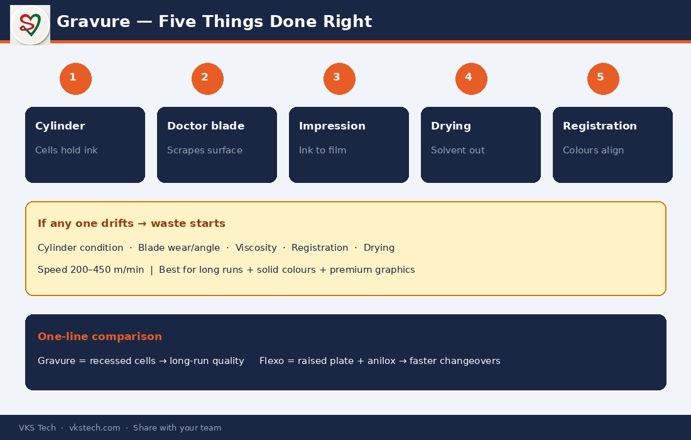

🖨️ Gravure Looks Complicated. On the Floor It Is Only Five Things Done Right.
📖 10-min read · Printing process · Operator + PPC + Quality
Many people treat gravure as a mysterious high-end process. In reality, once the cylinder is made, the daily battle is controlled by five practical points: cylinder condition, doctor blade, ink viscosity, registration and drying. Master these and you control quality and waste.
This article is written for people who need to use gravure knowledge on the shop floor or in planning — not for cylinder engravers.
- Typical speed: 200–450 m/min on modern lines
- Best for: Long runs, solid colours, premium graphics
- Cylinder cost: High upfront → low cost per metre on large volume
- Daily killers: Worn blade, wrong viscosity, registration drift, incomplete drying
1. How Gravure Actually Transfers Ink
- Engraved cylinder — Image is cut as tiny cells into a copper-plated cylinder. Image areas are recessed (intaglio).
- Ink fills the cells — Cylinder picks up ink; non-image area is also wet at this stage.
- Doctor blade — A thin steel blade scrapes the surface clean. Only ink inside the cells remains.
- Impression — Film is pressed against the cylinder. Ink from the cells transfers to the film.
- Drying — Hot-air dryers remove solvent before the next colour station.
- Registration — Automatic systems keep every colour aligned as the film moves.

2. The Five Control Points That Decide Quality
| Control point | What goes wrong if ignored |
|---|---|
| Cylinder condition | Weak colour, missing detail, early wear |
| Doctor blade | Streaks, excess ink, dirty non-image areas |
| Ink viscosity | Density swings, drying problems, set-off |
| Registration | Customer rejection and high setup waste |
| Drying | Blocking, set-off, solvent retention |
3. When Gravure Wins (and When It Does Not)
Choose gravure when: order volume is large, print quality must stay consistent for long runs, and solid colours / fine gradients are important.
Think twice when: jobs change frequently, order quantity is small, or cylinder cost cannot be recovered. In those cases flexo often wins on total cost and changeover speed.
Next → Flexo Printing – Complete Guide (anilox, plate and why changeovers kill capacity)
🖨️ ग्रेव्योर जटिल लगता है। फर्श पर यह सिर्फ पाँच चीज़ें सही करने का नाम है।
📖 10-मिनट पढ़ें · प्रिंटिंग प्रोसेस · ऑपरेटर + PPC + क्वालिटी
बहुत लोग ग्रेव्योर को रहस्यमय ऊँची प्रक्रिया मानते हैं। असल में सिलेंडर बन जाने के बाद रोज़ की लड़ाई पाँच व्यावहारिक बिंदुओं से तय होती है: सिलेंडर की हालत, डॉक्टर ब्लेड, इंक विस्कोसिटी, रजिस्ट्रेशन और ड्राइंग।
- Typical स्पीड: 200–450 m/min
- सबसे अच्छा: लंबी रन, सॉलिड कलर, प्रीमियम ग्राफिक्स
- रोज़ के खलनायक: घिसा ब्लेड, गलत विस्कोसिटी, रजिस्ट्रेशन ड्रिफ्ट, अधूरी ड्राइंग
1. ग्रेव्योर इंक कैसे ट्रांसफर करता है
- एंग्रेव्ड सिलेंडर (कोशिकाओं में इमेज)
- इंक कोशिकाओं में भरती है
- डॉक्टर ब्लेड अतिरिक्त इंक खुरचता है
- इंप्रेशन रोलर फिल्म पर इंक दबाता है
- ड्राइंग — सॉल्वेंट तुरंत उड़ता है
- रजिस्ट्रेशन — हर रंग अलाइन रहता है
2. पाँच नियंत्रण बिंदु
सिलेंडर हालत · डॉक्टर ब्लेड · इंक विस्कोसिटी · रजिस्ट्रेशन · ड्राइंग — इनमें से कोई भी बिगड़े तो गुणवत्ता और वेस्टेज दोनों प्रभावित होते हैं।
अगला → फ्लेक्सो प्रिंटिंग – पूरी गाइड